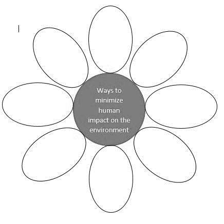

Human activities have a profound impact on ecosystems, shaping the environment in both positive and negative ways. As the dominant species on Earth, humans rely on natural resources for survival and development, but our actions often disrupt the delicate balance of ecosystems. From deforestation and pollution to unsustainable farming practices, these activities threaten biodiversity, alter climate patterns, and degrade land, water, and air quality.
Understanding the consequences of human actions is crucial for promoting sustainable practices that minimize harm to the environment. This module explores the effects of human activities on ecosystems, identifies key pollutants, and highlights conservation strategies to protect our planet. By learning how to reduce our ecological footprint, we can contribute to a healthier, more sustainable future for all living organisms.
Let’s delve into the ways human activities influence ecosystems and discover how we can become better
stewards of the Earth.
This module contains:
After completing this module, you will be able to:
(MELC Week 7 S8LT-IVj-25)
The Earth was created with all abundance and variety of living and non-living organisms, with the sun as the source of natural energy to all that inhabit it. Man is given dominion over all the creation. Hence, they may utilize resources found in it to survive and progress. However, the weight of human activities takes a toll on the environment. Human activities affect environmental conditions from multiple perspectives such as unsustainable farming practices, emission of harmful substances into the air, and introduction of pollutants to bodies of water, land, and air.
A pollutant is a harmful material that enters the biosphere through the land, air, or water. The most common human activity that causes water pollutants to get introduced to the aquatic ecosystem is by using fertilizer, pesticides, and herbicides near bodies of water. When it rains, these chemicals get into rivers, creeks, or even seas, thus contaminating or worse, polluting it. The build-up of fertilizers may cause algal bloom resulting in the death of those bodies of water.
Improper waste disposal is another crucial issue. People litter everywhere to the extent that canals are being blocked by numerous pieces of garbage. R.A 9003 enacted in the Philippines in 2003 prohibits open dumping of garbage as its leachate pollutes the soil and underground water aside from the fact that it invites all sorts of insects and rodents that carry infectious diseases and respiratory problems. Despite this standing Act, open dumping of garbage is still widely practiced all over the country. Also, farmers extensively practice the use of inorganic fertilizers, pesticides, and herbicides to ensure productivity. Using these pollutants more often can alter the nutrient of the soil resulting in the loss of organic matter in it. Furthermore, misuse of our forests such as ruthless cutting of immature trees, illegal logging, and operating kaingin systems cause soil erosion and flash floods. The air gets polluted when there is a clear or invisible particle or gas found to mix in its original, normal composition. Smog - a gray-brown haze formed by a combination of chemicals is a sign of air pollution. It is mainly caused by human activities such as smoke-belching and congestion of vehicles during heavy traffic causing a higher concentration of carbon monoxide, which in turn causes respiratory ailments to humans over long exposure to it. Moreover, some human practices that contribute to greenhouse gases are the burning of plastics and combustion of fossil fuel, use of aerosols and CFC-containing products. Popularly known greenhouse gases are carbon dioxide (CO2), methane, and nitrous oxide that hasten global warming.
Humans interfere with the ecosystem by disrupting the ecological balance. They are the highest consumers in numerous food pyramids. To increase food production, man uses methods and farming practices that affect food chains and food webs, such as monocultures, the use of artificial fertilizers, pesticides and herbicides. Monoculture, also known as monocropping, is a farming practice that involves the continuous cultivation of a single crop on the same large land areas without change. For farmers, this is practical since it facilitates the specialization of the sort of crop to plant to maximize the uptake of the nutrients the soil offers. However, planting the same crop in the same place over the years takes up most of the same nutrients leaving the soil weak and unable to support healthy plant growth leading to poor crop yield. Also, monocrops usually require large amounts of chemical fertilizers. Constant and uncontrolled use of chemical fertilizers may increase soil acidity, thus destroying soil structure. Monocropping also gives rise to resistant pests and diseases that account for chemical treatment. Farmers spray their crops with insecticides to kill insect pests, and with herbicides to kill weeds. An herbicideis a chemical used to destroy and stop the growth of plants. However, the chemicals also destroy other organisms, including beneficial insects and soil organisms that help in decay. Therefore, wise management of natural resources should be taken into consideration to mitigate the negative impacts of human activities in the environment and thus support sustainability, the prevention of the decreasing of natural resources to maintain an ecological balance. Conservation is the careful preservation and protection of natural resources. So, as a steward of the earth, let us help one another to make our environment a better place to live in for us and for the next generation.
“The conservation of natural resources is the fundamental problem. Unless we solve that problem it will avail us little to solve all others.”
- Theodore Roosevelt
Directions: Write True if the statement is true and False if the statement is false.
Write your answers on a separate sheet of paper.
Directions: Match the problem with the solution by writing the letter only on a separate sheet of paper.
| Human Activities | Pollutant derived from human activities | Effect of pollutant on the Environment |
|---|---|---|
| 1. | Nitrates | Alter the nutrient of the soil |
| 2. | Pesticides and herbicides | Pollute bodies of water |
| Burning of plastics | Carbon dioxide | 3. |
| 4. | Toxic chemicals | Fish kill |
| Using smoke-belching vehicles | Smog | 5. |
Directions: Complete the crossword puzzle. Write your answers on a separate sheet of paper.
Across
1. Observe proper disposal of ________ that can destroy biodiversity.
3. The popularly known ________ gases are carbon dioxide, methane, and nitrous oxide.
5. Constant and uncontrolled use of chemical fertilizers may increase soil ________.
6. The buildup of fertilizers may cause algal ________ leading to the death of bodies of water.
7.________ gives rise to resistant pests and diseases that account for chemical treatment.
8.________ a chemical used to destroy plants or stop plant growth.
Down
2. Ecological ________________ includes the stability of climate systems, biodiversity, and everything that is connected with the Earth’s ecosystem.
4. Three ways to conserve resources include reducing, ________, and reusing.
Directions: Complete the statement by writing the appropriate word or phrase on the blank. Write your answers on a separate sheet of paper.
Directions: List/suggest conservation practices that minimize the negative impacts of human activities on the environment. Write your answers on a separate sheet of paper.
Directions: Answer the question below. Write your answers on a separate sheet of paper.
Suppose you were a farmer, what kind of fertilizer will you use to ensure higher crop yield without damaging
the environment? Explain your answer.
______________________________________________________________
______________________________________________________________
______________________________________________________________
| Scoring Rubrics | |
|---|---|
| 3 | Discussions do not have misconceptions with complete scientific evidence. |
| 2 | Discussions do not have misconception with incomplete scientific evidence.ce. |
| 1 | Discussions have misconceptions and without scientific evidence. |
| 0 | No discussion. |